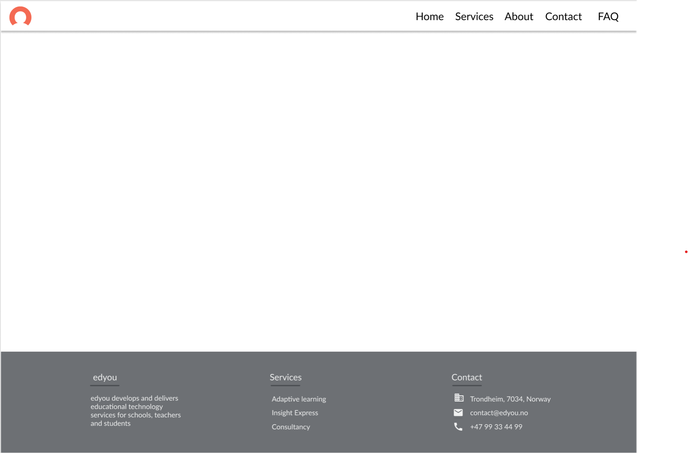
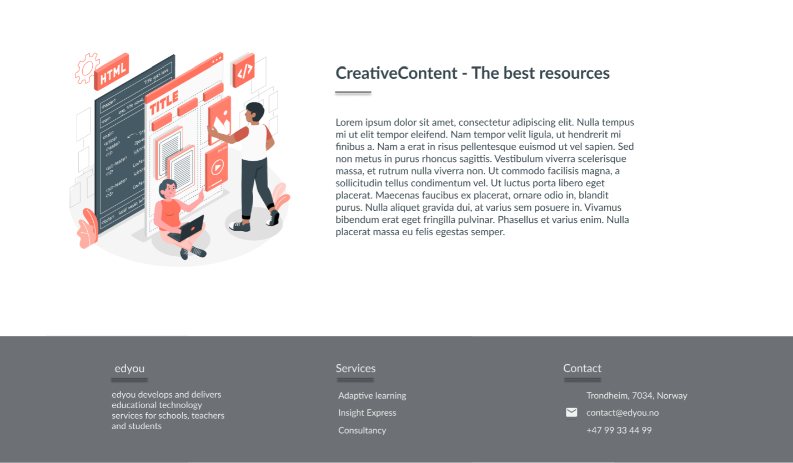
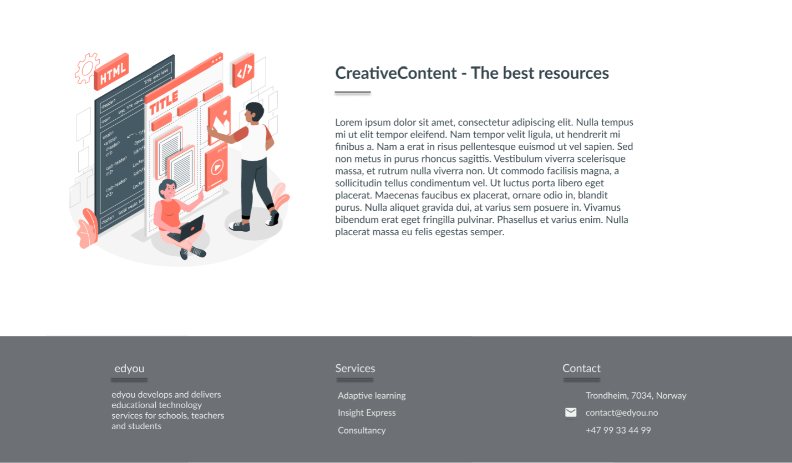

1. Administrative Details
Our client is Jakob Erikstad, working chairman of the board of Edyou AS.
2. Purpose, Goals and Audience
The purpose of the site is to serve as a digital surface introducing and redirecting Edyou's costumers, users and others to their desired information about the sercives Edyou offers.
Our goal is to enable Edyou to easliy promote their sercives, likewhise to give an intuitive way for their costumers - and potential costumers - to access information and content that explains how Edyou's services can offer teachers a more effective method of teaching and be a part of their classroom.
We want this to be done in a simple and precise way, enabeling Edyou to show why they are superior to the other contless amounts of ditial teaching tools in the market.
The teachers are the primary audience of Edyou, school administrations and students come second. Edyou want to direct their service to the teacher itself, to facilitate their own costumized educational methods.
3. Navigation Structure
All the pages of the site will be connected trough the navigation bar that is accessable from all pages, on the top of the screen. This clean and simple page layout will make it easy for the site-users to get the all their required information about Edyou, avoiding all potential confusions. This design choise fits our goal of enabeling Edyou to "easliy promote their services".
Insert clique here maybe?
4. Page Layout and Apperance
The universal design is recognized as minimalistic and with a simple colorscheme. Structurally the layout is made as simple as possible, with recognizable features such as a navigation bar, content sections and a footer. The footer represents another way to reach several of the different pages on the website, in addition to critical contact details for the target audience.
The navigation bar contains a logo to the upper left corner mostly to make users affiliate edyou with some kind of illustrations. In addition, the navigation bar contains five links to the other pages on the website. There is also a subtle indication of which page the visitor currently is looking at by the associated text in the navigation bar being highlighted in bold. Since the navigation bar is kept white to embrace the universal design, a drop shadow will seperate it from the rest of the page.
The content part of the site is left as a white blank canvas. This is intentionally to highlight the content and text elements on different pages, in addition to highlight different illustrations and images. To further highlight different sections and content a line with a drop shadow will separate the different section headers and paragraphs. Another universal design decision is that there should be sufficient space between different elements on a page. Hence, the illustrations will vary in width and height between 300px-450px. This is to avoid loosing visitors due to an overload of information and/or unclear message.
Finally, the footer will be at the bottom of every page. If there is insufficient content on a page to push the footer down, it will still remain at the bottom as it is perceived as the ending of a page. In pages with more content than the natural height of a standard desktop screen, the footer will appear when scrolling to the botttom.
In terms of design choices the following decisions have been made to stay aligned with the overall design principles:
- Font: Lato. Lato is chosen as it is simple to read, rounded, modern and well-balanced. This allows the site to appear simple but modern, and might appeal the target audience to keep interacting with its content. The fallback fonts will be Lucida Grande, Tahoma, Sans-Serif.
- Fontsizes:
- 30, biggest headers for all pages
- 20, navbar headers in footer, 2nd headers on all pages
- 18, all paragraphs
- 16, text in footer
- All headers are in bold. In the navigation bar the current page will be highlighted subtly by being in bold.
- The color scheme is simple with one vibrant color standing out. This is to maintain a clean and minimalistic, but recognizable impression of edyou. We believe this will increase the chance for the target audience, such as teachers and students, to continue reading and remember their interaction with edyou. The following colors represents the color schemefor the website:
- Background and white text: FFFFFF
- Dark grey text: #37474F
- Footer #6D7074
- Orange in figures/illustrations: FF725E
In addition, some of the colors might appear in slightly different variations in the illustrations. This includes both the color itself and opacity.
5. Content
- Homepage
- Services
- About
- Contact
- Confirmation
- FAQ
The home page should be organized with the intention of intriguing the target audience to continue exploring the site. Therefore, the ladning page needs to have eye-capturing illustrations and images and short blocks of text stating what Edyou does and how they do it. At the same time it is important that the visitors don't get overwhelmed by information. Hence, the presented content will mostly consist of captivating illustrations or images, in addition to titles and paragraphs directly targeting different segments of the target audience.
The homepage should contain elarobate information on these services if the reader wishes to explore more. These are accessable by the navigation bar.
The services page will be one of the longer pages on the website. This is because this page contains a lot of information regarding the different services, and to maintain a minimalistic and readable appearance enough space is required. Again, the illustrations in combination with the headers for each section will be important in directing the target audience to the correct content. From there, the paragraph contains relevant information for the different segments in the target audience. Hence, big fonts on the headers accompanied by captivating and illustrations or images are necessary to build this page.
 

The about page is usually visited by users who requires more information about edyou and wants to know more. Hence, this page will consist of a header on top of an image that takes up some space, in addition to a section with a header and paragraph on information about what edyou is and does. Additionally, there will be an illustration to exemplify the vision of edyou and stay in line with the overall design.
In case a visitor wants to know more than what the website can offer, they are able to get in contact with edyou through this simple submission form on the contact page. This page has one job, and one job only - get in touch with the target audience. Therefore, it differentiates itself from the other pages without having any illustrations or images. This is intential to ensure that the user is able to leave their contact information and receive more information from edyou.
This page is intended to give the visitor an impressions that their request has been sent and that it is being dealt with. Again, as the visitor likely already have visisted the page and read content and now wants to get in touch, the confirmation page is minmalistic.
Several users in the target audience often have the same questions that are frequently asked. The FAQ page easily provides answers to these questions and nothing more. Just as the contact page, this page also deviates from the design in use (or lack of use) of illustrations and images purposely. The list of questions should initially be collapsed such that visitors can expand the questions they are looking for, and perhaps the answer they seek.
6. Minimum Requirements
There will be four (4) JavaScript applications in this site
- Navigation bar
- Form submission validation/li>
There will be a subscription form on the contact page that will require form validation. Hence, a javascript function will need to validate both the phone number and email.
- Scroll back to top
- Show question
JavaScript will be implementet such that when you scroll down, the navigation bar will hide. When you scroll up, the navigation bar will re-appear.
On the where a visitor can scroll down there should appear a button on the middle of the screen that takes the user back to the top of the page.
On the FAQ page there will be many questions. To avoid making the reader confused with long text answers, the answers should only appear when the user clicks on a certain question or topic.
Additionally, we hope to make a javacript function that functions as a pop-up for the visitor and asks if they are a student or teacher, and then directs them to the most relevant service on the service page.
7. Plan
File Structure
- homepage.html
- services.html
- about.html
- contact.html
- faq.html
- img/
- logo.png
- logo.ico
- homepage_student.png
- homepage_teacher.png
- homepage_optimize.png
- services_adaptive.png
- services_insight.png
- services_content.png
- faq_background.png
- faq_rocket.png
- mail.png
- phone.png
- scripts/
- navbar.js
- form_submission.js
- back_to_top.js
- show_faq.js
- popup.js
- style.css
| Filename | Description | In Charge | Deadline |
| homepage.html | Homepage of the site | Marius | 15.10.21 |
| services.html | Display of services Edyou offers | Marius | 15.10.21 |
| about.html | Information about Edyou | Sigurd | 25.10.21 |
| contact.html | Contact information | Sigurd | 31.10.21 |
| faq.html | Display of frequently asked questions | Sigurd | 05.11.21 |
| navbar.js | Navbar hides when scrolling down, appears when scrolling up | Erlend | 20.10.21 |
| form_submission.js | Handle form submission and validation of email and phone | Erlend | 25.10.21 |
| back_to_top.js | Provides users who have scrolled down a simple way to return to the top of the page | Erlend | 31.10.21 |
| show_faq.js | Expands/collapses different FAQ questions on click | Erlend | 31.10.21 |
| popup.js | Popup that appears on the home page asking visitor if they are a student or teacher and directing them to the most relevant service | Erlend | 31.10.21 |
| style.css | Visual styling of the page | Marius | 10.11.21 |
| Quality control and testing | Control procedure before site goes online | Marius | 11.11.21 |